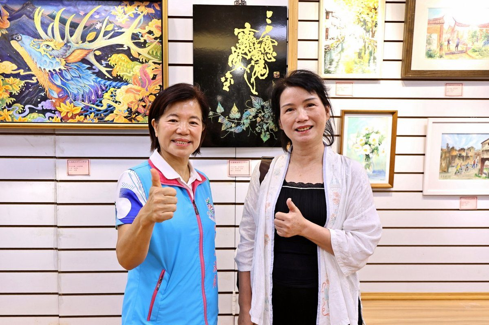

花蓮美育交流學會聯展 吉安游淑貞推廣藝文深化生活

可樂電子報小編/編輯
吉安鄉長游淑貞致力於地方藝文發展，積極推動「藝術即生活、生活即藝術」理念，於7月28日上午出席在花蓮縣客家文化會館盛大舉辦的「靚靚藝文情－花蓮縣美育交流學會會員聯展」開幕茶會。此次聯展匯聚了50位會員的80件多元創作，作品涵蓋書法、國畫、西畫、水彩畫、版畫、烙畫、攝影等，並包含手工皂、皮件、編織等應用藝術，展現花蓮深厚的藝文底蘊。

花蓮縣美育交流學會理事長鍾義德表示，本次聯展展期自即日起至8月21日，每日上午8點至下午5點。他特別感謝各界貴賓蒞臨開幕茶會，以及會員們無私分享的精采作品，誠摯邀請廣大藝術愛好者前來欣賞，共同沉浸於多元藝術的魅力。開幕茶會現場，眾多藝術家與各界貴賓齊聚一堂，共同見證這場藝文盛事。民眾們專注聆聽藝術家分享創作理念，並熱烈討論作品的構圖、色彩與意境，展現花蓮藝文活動推廣日益深耕的成果。

鄉長游淑貞致詞時指出，花蓮縣美育交流學會多元媒材的展出，不僅提升了藝文展覽的質量，更證明在吉安與花蓮積極推動下，藝術已然融入民眾生活，實踐了「藝術即生活」的願景。她強調，此次展出的作品藝術內涵與質感逐年精進，象徵著花蓮藝文界無限的創作能量。未來，吉安鄉將持續規劃更多空間，讓在地藝術家得以展現生活與藝術的對話，豐富民眾心靈，奠定扎實的藝文基礎，讓藝術美學更貼近日常。

▶ 延伸觀看
📺 相關報導影片：點此於 YouTube 觀看完整報導